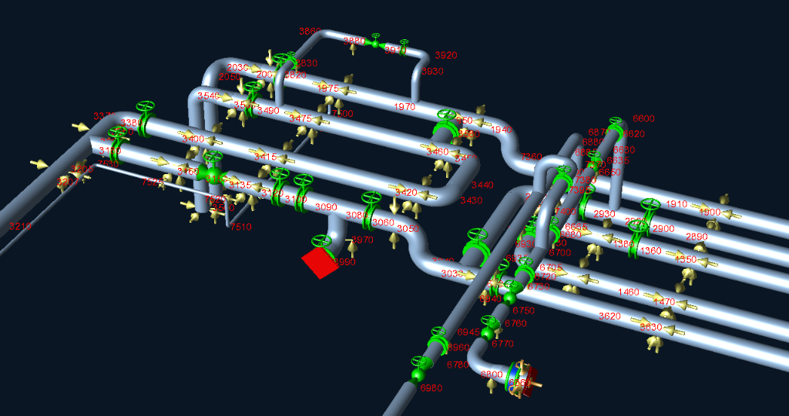
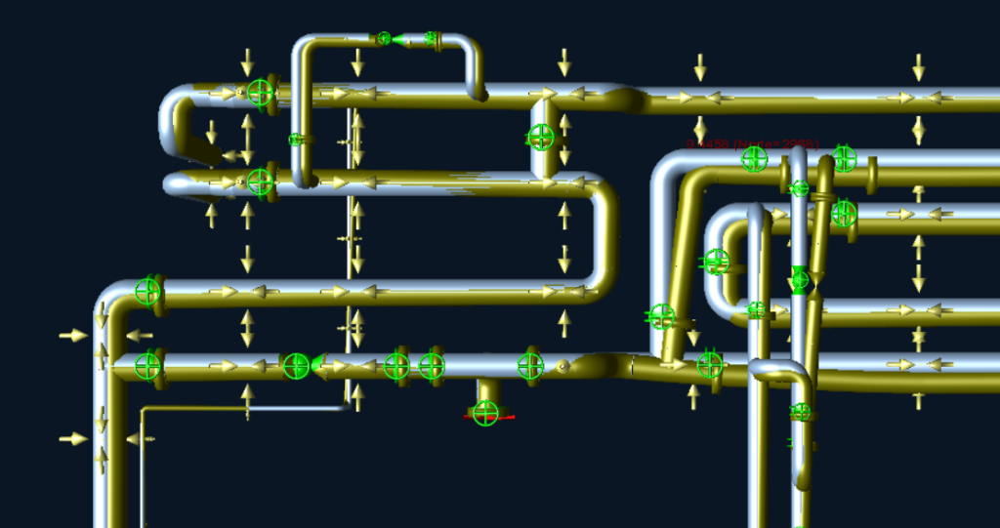
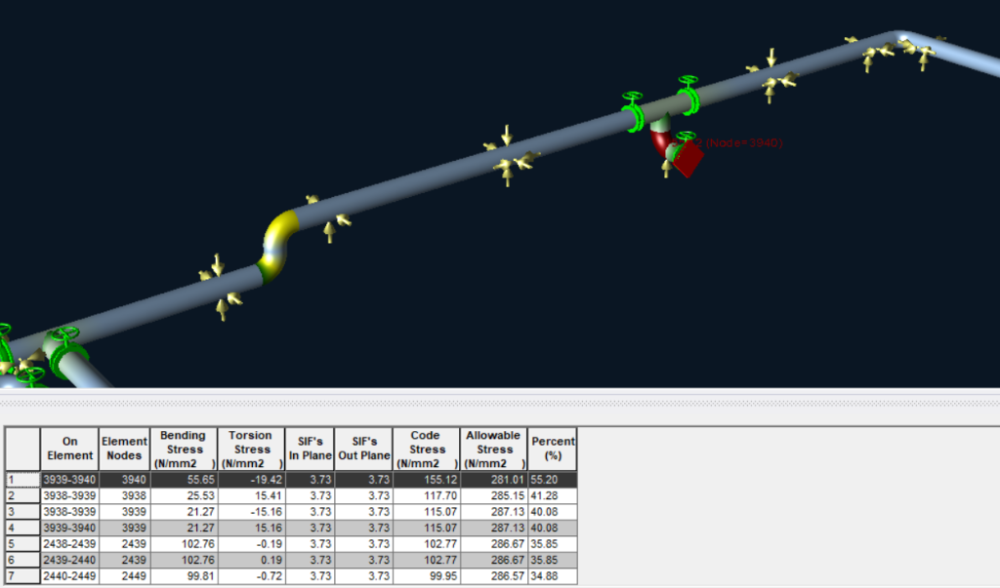
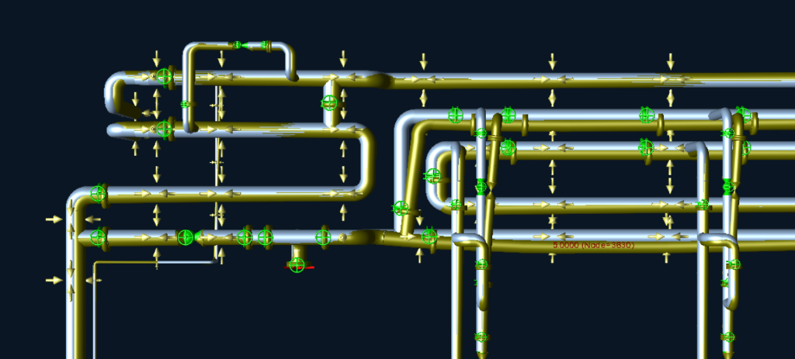

14" (DN350) and 12" (DN300) primary chilled-water supply & return headers.
Piping flexibility · Stress analysis · ASME B31.1
Data Center Chilled-Water Piping Stress Analysis
Comprehensive piping flexibility, thermal contraction, and restraint optimization for an insulated chilled-water distribution system serving a data center facility.

Project overview
This project involved a comprehensive piping flexibility and stress analysis of an insulated chilled-water system serving a data-center facility. The network comprised 14-inch and 12-inch main headers with 6-inch branches, constructed from ASTM A53 Grade B carbon-steel piping and assessed in accordance with ASME B31.1.
The system was evaluated for design and operating conditions including internal pressure, dead weight, insulation weight, hydrotest loading, thermal effects, wind, and seismic actions applicable to the Riyadh location.
A key design challenge was the high load generated at several restraints by thermal contraction. With an ambient reference temperature of 50°C and chilled-water operating temperatures of 20°C supply and 28°C return, the piping experienced significant contraction during operation.
Because modification of the piping route or expansion-loop geometry was not feasible due to spatial and physical coordination constraints, multiple stress-analysis iterations were completed to optimize the support and restraint arrangement. Simple rests, guides, guide-and-limit-stop combinations, and PTFE sliding supports were evaluated while maintaining the applicable support-spacing requirements.
The resulting support strategy provided the required system flexibility, controlled restraint reactions, and maintained piping-code compliance with a governing stress ratio of 55.20% without changing the coordinated pipe routing.
Design & operating conditions
Verified project inputs
Piping parameters and environmental criteria for the data center facility in Riyadh.
6" (DN150) branch connections serving data hall cooling equipment.
20°C chilled-water supply and 28°C return operating conditions.
Maximum ambient / installation reference temperature for thermal baseline.
Internal design operating pressure for sustained stress evaluation.
Shop / field hydrostatic test pressure under ambient conditions.
Carbon steel piping with external thermal insulation accounted for in deadweight.
Evaluated for site-specific wind and seismic loading criteria.
System configuration
The chilled-water distribution network consists of extensive dual 14-inch and 12-inch main supply and return headers running across the facility, branching into multiple 6-inch connections that interface with data hall air handling units and chillers. The entire system is insulated to prevent condensation and thermal gains in the desert climate.
Applicable code and material
The analysis was conducted in strict accordance with ASME B31.1 (Power Piping), covering pressure integrity, sustained stress limits, thermal expansion/contraction stress ranges, and occasional load allowances. The pipe material is ASTM A53 Grade B carbon steel, evaluated with standard code allowable stress values across operating, ambient, and hydrotest temperature conditions.
Engineering challenge
The governing challenge was controlling high restraint forces caused by thermal contraction. Because the installation and ambient reference temperature reaches 50°C while the operating chilled water flows at 20°C (supply) and 28°C (return), the piping experiences a temperature differential of up to −30°C during service, resulting in continuous contraction along the long header runs.
Due to tight spatial clearances and coordination with adjacent building services, modifying the piping route or adding new expansion loops was not permitted. Consequently, all thermal movement, restraint loads, and stresses had to be resolved solely through support arrangement and restraint engineering.
Analysis methodology
A complete 3D finite element piping flexibility model was constructed to simulate the entire distribution network. The model incorporated pipe geometry, fittings, valves, flange weights, insulation dead load, fluid contents, internal pressure, thermal contraction ranges, and structural boundary conditions.
- Constructed full 3D beam-element piping network covering all 14", 12", and 6" lines with realistic component weights and Stress Intensification Factors (SIFs).
- Calculated thermal contraction strains for both supply (ΔT = −30°C) and return (ΔT = −22°C) temperature differentials relative to 50°C installation baseline.
- Applied internal design pressure (8.7 bar) and hydrostatic test pressure (11.3 bar).
- Evaluated site-specific occasional actions including Riyadh wind and seismic response spectra.
- Conducted iterative restraint optimization to minimize reaction forces transmitted to the building structure.
Load cases assessed
The piping system was evaluated across the standard ASME B31.1 load-case categories:
- Sustained Condition (SUS): Pipe self-weight + insulation weight + water contents weight + internal design pressure (8.7 bar).
- Operating Conditions (OPE): Sustained loading combined with thermal contraction at 20°C supply and 28°C return temperatures.
- Thermal Contraction Range (EXP): Cyclic thermal range between installation reference (50°C) and operational chilled-water states.
- Hydrotest Condition (HYD): Pipe self-weight + water filling weight + hydrostatic test pressure (11.3 bar) at ambient condition.
- Occasional Conditions (OCC): Sustained loads combined with site-specific wind and seismic forces for the Riyadh location.
Thermal-contraction behaviour
Thermal contraction pulls the piping inward toward rigid anchor points, generating tensile axial forces and substantial lateral shear loads at intermediate directional guides. The analysis identified critical displacement vectors along the long header runs, reaching a maximum displacement of 9.4458 mm at Node 2968.
Support and restraint optimization
To accommodate thermal contraction while maintaining structural stability under deadweight, hydrotest, and occasional wind/seismic forces, an engineered combination of support types was established:
- Simple resting supports: Provided vertical gravity support while permitting free two-dimensional horizontal thermal movement.
- Guided supports: Constrained lateral displacement to maintain alignment along straight header spans while allowing axial contraction.
- Guide-and-limit-stop combinations: Permitted controlled thermal movement up to predefined gap thresholds (such as 5.0 mm travel at Node 3630) before engaging to arrest occasional dynamic movement.
- Sliding supports with PTFE interfaces: Implemented low-friction PTFE sliding plates to minimize friction-induced horizontal forces transferred into the supporting steel structures.
Design-iteration process
Multiple engineering iterations were carried out to optimize support locations, restraint spacing, sliding directions, and gap allowances. Support spans were verified against project criteria, constructability limits, and applicable code guidelines. By strategically converting rigid restraints into directional guides and PTFE sliding supports, thermal contraction loads were evenly distributed without altering the fixed piping geometry.
Verified results
Code compliance & stress results
Verified values extracted from the CAESAR II stress analysis report and model outputs.
Governing code stress recorded at elbow Node 3940 (Element 3939–3940).
ASME B31.1 allowable stress limit at governing Node 3940.
Maximum code utilization ratio, confirming safe compliance (< 100%).
Maximum resultant thermal contraction displacement at Node 2968.
Controlled axial limit-stop travel allowance at Node 3630.
In-plane & out-of-plane stress intensification factor at critical elbow elements.
| On Element | Node | Bending Stress (N/mm²) | Torsion Stress (N/mm²) | SIF (In/Out) | Code Stress (N/mm²) | Allowable (N/mm²) | Utilization (%) |
|---|---|---|---|---|---|---|---|
| 3939–3940 | 3940 | 55.65 | -19.42 | 3.73 / 3.73 | 155.12 | 281.01 | 55.20% (Governing) |
| 3938–3939 | 3938 | 25.53 | 15.41 | 3.73 / 3.73 | 117.70 | 285.15 | 41.28% |
| 3938–3939 | 3939 | 21.27 | -15.16 | 3.73 / 3.73 | 115.07 | 287.13 | 40.08% |
| 3939–3940 | 3939 | 21.27 | 15.16 | 3.73 / 3.73 | 115.07 | 287.13 | 40.08% |
| 2438–2439 | 2439 | 102.76 | -0.19 | 3.73 / 3.73 | 102.77 | 286.67 | 35.85% |
| 2439–2440 | 2439 | 102.76 | 0.19 | 3.73 / 3.73 | 102.77 | 286.67 | 35.85% |
| 2440–2449 | 2449 | 99.81 | -0.72 | 3.73 / 3.73 | 99.95 | 286.57 | 34.88% |
Final engineering outcome
The iterative support optimization successfully resolved all thermal contraction challenges without requiring modifications to the constrained piping routing or expansion geometry. The final support configuration achieved full ASME B31.1 code compliance, with a governing stress ratio of 55.20% (155.12 N/mm² vs 281.01 N/mm² allowable), controlled maximum thermal displacement within 9.45 mm, and verified structural restraint reactions across all sustained, thermal, hydrotest, and occasional load conditions.
Project gallery



